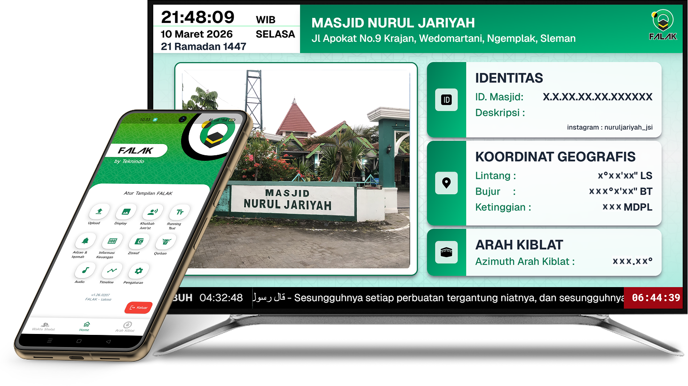

Solusi Cerdas Masjid Modern:
Falak TV
Jam Sholat Digital & Informasi Masjid Terpadu
Tinggalkan jam LED konvensional. Falak TV menyulap TV LED biasa di masjid Anda menjadi pusat informasi visual yang elegan, informatif, dan akurat berdasarkan koordinat daerah Anda.
Lihat Fitur Kami
Tentang Falak TV
Falak TV adalah perangkat lunak dan keras inovatif yang dirancang khusus untuk memenuhi kebutuhan visual masjid-masjid di era digital. Dengan balutan desain Islami yang elegan dan kemudahan pengaturan via smartphone atau komputer, Falak TV memastikan jamaah selalu mendapatkan informasi jadwal sholat yang akurat, hitung mundur iqomah, laporan keuangan, visualisasi arah kiblat, hingga pengumuman kajian rutin dengan cara yang jauh lebih indah.
Fitur Unggulan Kami
Desain dirancang khusus untuk memenuhi kebutuhan ibadah masjid modern.
Jadwal Sholat Akurat
Menggunakan algoritma astronomi (falak) terkini yang disesuaikan secara presisi dengan titik koordinat (GPS) lokasi masjid Anda berada.
Timer Iqomah Otomatis
Dilengkapi fitur hitung mundur iqomah (jeda adzan ke iqomah) yang dapat diatur durasinya berbeda-beda untuk setiap waktu sholat.
Running Text & Pengumuman
Tampilkan informasi jadwal kajian, laporan kas keuangan masjid, atau pesan-pesan dakwah melalui teks berjalan (running text) yang mudah diganti via Admin Panel.
Murottal & Tarhim Otomatis
Sistem dapat memutar lantunan ayat suci Al-Quran atau tarhim secara otomatis beberapa menit sebelum waktu adzan tiba.
Arah Kiblat Otomatis
Menampilkan informasi dan visualisasi arah kiblat yang dihitung secara akurat langsung dari titik koordinat lokasi bangunan masjid.
Validasi Pakar & Ahli
Sistem perhitungan dan fitur keagamaan telah dikaji serta divalidasi langsung oleh pakar falak dan ahli di bidangnya.